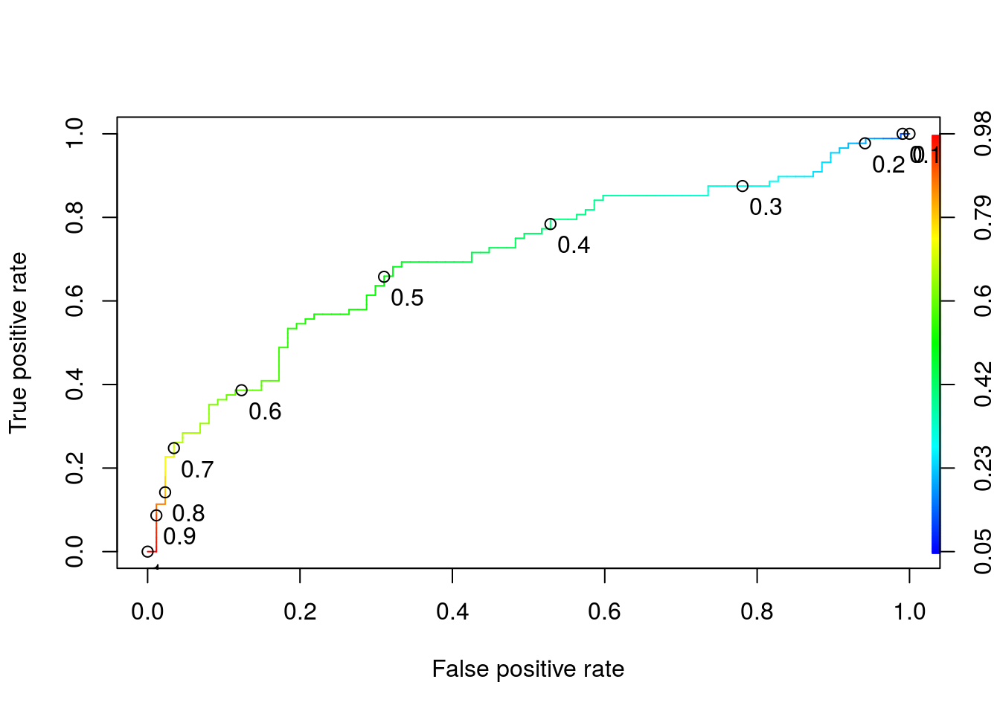
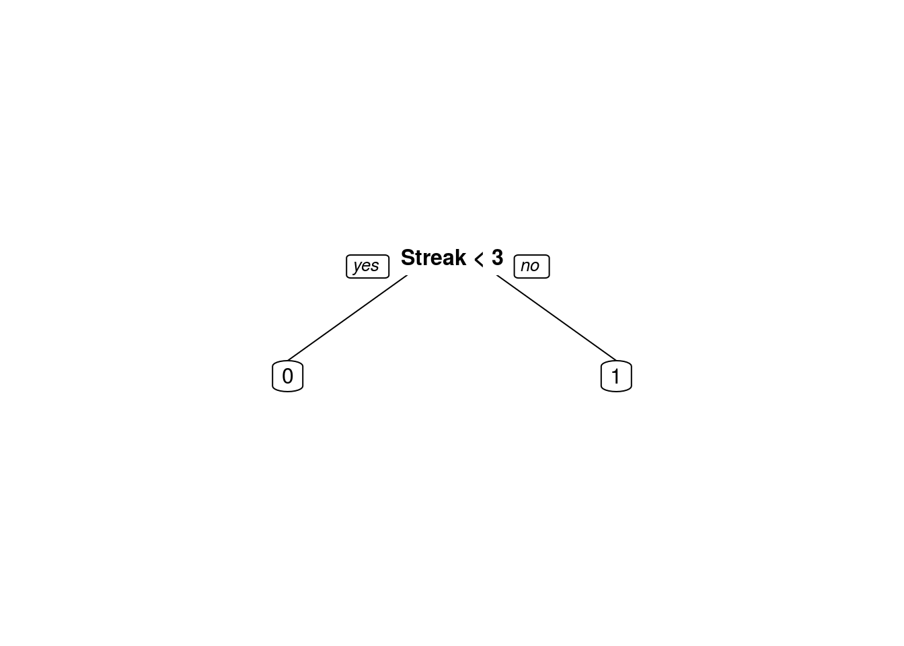
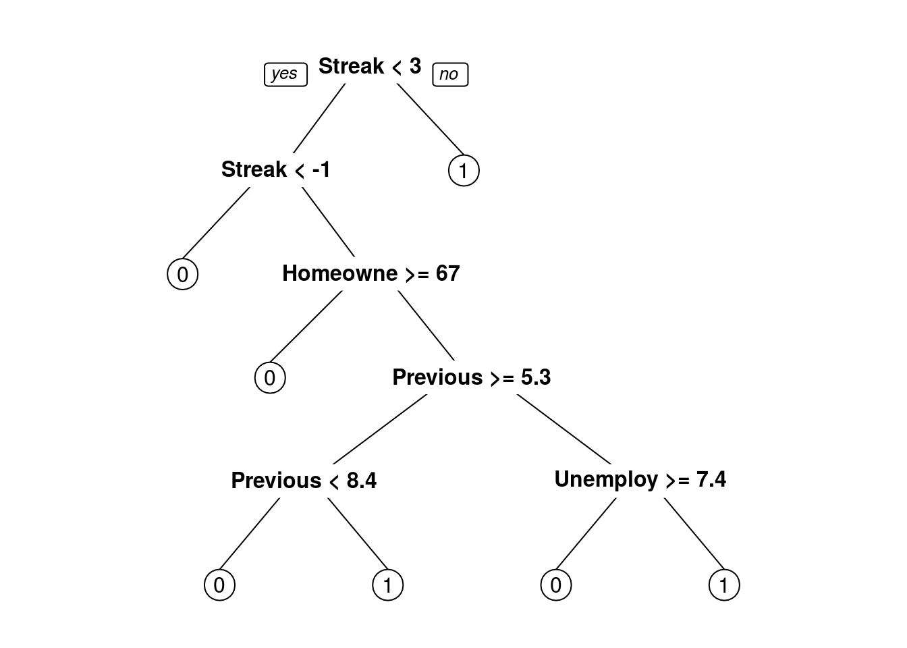

The federal funds rate is the key interest rate that the U.S. Federal Reserve uses to influence economic growth. The Federal Open Market Committee meets regularly to decide whether to increase, decrease, or maintain the target interest rate. Their choice has important ramifications that cascade through the economy, so the announcement of the interest rates is eagerly awaited each month.
In this analysis, I’ll use analytics to try to predict when the Fed will raise interest rates. I’ll look at monthly economic and political data dating back to the mid-1960’s. In this analysis, the dependent variable will be the binary outcome variable RaisedFedFunds, which takes value 1 if the federal funds rate was increased that month and 0 if it was lowered or stayed the same. For each month, the file federalFundsRate.csv.xz contains the following independent variables:
- Date: The date the change was announced.
- Chairman: The name of the Federal Reserve Chairman at the time the change was announced.
- PreviousRate: The federal funds rate in the prior month.
- Streak: The current streak of raising or not raising the rate, e.g. +8 indicates the rate has been increased 8 months in a row, whereas -3 indicates the rate has been lowered or stayed the same for 3 months in a row.
- GDP: The U.S. Gross Domestic Product, in Billions of Chained 2009 US Dollars.
- Unemployment: The unemployment rate in the U.S.
- CPI: The Consumer Price Index, an indicator of inflation, in the U.S.
- HomeownershipRate: The rate of homeownership in the U.S.
- DebtAsPctGDP: The U.S. national debt as a percentage of GDP
- DemocraticPres: Whether the sitting U.S. President is a Democrat (DemocraticPres=1) or a Republican (DemocraticPres=0)
- MonthsUntilElection: The number of remaining months until the next U.S. presidential election.
Problem 1 - Loading the Data
Use the read.csv function to load the contents of federalFundsRate.csv.xz file into a dataframe called fedFunds, using stringsAsFactors=FALSE.
What proportion of months did the Fed raise the interest rate?
fedFunds <- read.csv("federalFundsRate.csv.xz")
str(fedFunds)'data.frame': 585 obs. of 12 variables:
$ Date : Factor w/ 585 levels "1966-02-01","1966-03-01",..: 1 2 3 4 5 6 7 8 9 10 ...
$ Chairman : Factor w/ 8 levels "Bernanke, Ben",..: 4 4 4 4 4 4 4 4 4 4 ...
$ PreviousRate : num 4.42 4.6 4.65 4.67 4.9 5.17 5.3 5.53 5.4 5.53 ...
$ Streak : int 4 5 6 7 8 9 10 11 -1 1 ...
$ GDP : num 4202 4202 4202 4219 4219 ...
$ Unemployment : num 4 3.8 3.8 3.8 3.9 3.8 3.8 3.8 3.7 3.7 ...
$ CPI : num 31.9 32.1 32.2 32.3 32.4 ...
$ HomeownershipRate : num 63.5 63.5 63.5 63.2 63.2 63.2 63.3 63.3 63.3 63.8 ...
$ DebtAsPctGDP : num 40.3 4201.9 4201.9 39.2 4219.1 ...
$ DemocraticPres : int 1 1 1 1 1 1 1 1 1 1 ...
$ MonthsUntilElection: int 33 32 31 30 29 28 27 26 25 24 ...
$ RaisedFedFunds : int 1 1 1 1 1 1 1 0 1 1 ...summary(fedFunds) Date Chairman PreviousRate
1966-02-01: 1 Greenspan, Alan :221 Min. : 0.070
1966-03-01: 1 Bernanke, Ben : 96 1st Qu.: 3.290
1966-04-01: 1 Burns, Arthur : 96 Median : 5.390
1966-05-01: 1 Volcker, Paul : 96 Mean : 5.651
1966-06-01: 1 Martin, William M.: 48 3rd Qu.: 7.880
1966-07-01: 1 Miller, G. William: 17 Max. :19.100
(Other) :579 (Other) : 11
Streak GDP Unemployment CPI
Min. :-16.000 Min. : 4202 Min. : 3.400 Min. : 31.88
1st Qu.: -2.000 1st Qu.: 6039 1st Qu.: 5.000 1st Qu.: 63.40
Median : 1.000 Median : 8907 Median : 5.900 Median :129.10
Mean : 1.094 Mean : 9450 Mean : 6.181 Mean :127.71
3rd Qu.: 3.000 3rd Qu.:12956 3rd Qu.: 7.300 3rd Qu.:180.00
Max. : 27.000 Max. :16206 Max. :10.800 Max. :237.63
HomeownershipRate DebtAsPctGDP DemocraticPres MonthsUntilElection
Min. :63.20 Min. : 30.60 Min. :0.0000 Min. : 0.00
1st Qu.:64.20 1st Qu.: 62.35 1st Qu.:0.0000 1st Qu.:12.00
Median :64.80 Median : 6039.16 Median :0.0000 Median :24.00
Mean :65.41 Mean : 6317.32 Mean :0.4256 Mean :23.58
3rd Qu.:66.50 3rd Qu.:10529.38 3rd Qu.:1.0000 3rd Qu.:35.00
Max. :69.20 Max. :16205.59 Max. :1.0000 Max. :47.00
RaisedFedFunds
Min. :0.0000
1st Qu.:0.0000
Median :1.0000
Mean :0.5026
3rd Qu.:1.0000
Max. :1.0000
table(fedFunds$RaisedFedFunds)
0 1
291 294 294 / (291 + 294)[1] 0.5025641Problem 2 - The Longest-Serving Fed Chair
Which Fed Reserve Chair has presided over the most interest rate decisions?
table(fedFunds$Chairman)
Bernanke, Ben Burns, Arthur Greenspan, Alan
96 96 221
Martin, William M. Miller, G. William N/A
48 17 2
Volcker, Paul Yellen, Janet
96 9 Greenspan, Alan
Problem 3 - Converting Variables to Factors
Convert the following variables to factors using the as.factor function:
- Chairman
- DemocraticPres
- RaisedFedFunds
Which of the following methods requires the dependent variables be stored as a factor variable when training a model for classification?
str(fedFunds)'data.frame': 585 obs. of 12 variables:
$ Date : Factor w/ 585 levels "1966-02-01","1966-03-01",..: 1 2 3 4 5 6 7 8 9 10 ...
$ Chairman : Factor w/ 8 levels "Bernanke, Ben",..: 4 4 4 4 4 4 4 4 4 4 ...
$ PreviousRate : num 4.42 4.6 4.65 4.67 4.9 5.17 5.3 5.53 5.4 5.53 ...
$ Streak : int 4 5 6 7 8 9 10 11 -1 1 ...
$ GDP : num 4202 4202 4202 4219 4219 ...
$ Unemployment : num 4 3.8 3.8 3.8 3.9 3.8 3.8 3.8 3.7 3.7 ...
$ CPI : num 31.9 32.1 32.2 32.3 32.4 ...
$ HomeownershipRate : num 63.5 63.5 63.5 63.2 63.2 63.2 63.3 63.3 63.3 63.8 ...
$ DebtAsPctGDP : num 40.3 4201.9 4201.9 39.2 4219.1 ...
$ DemocraticPres : int 1 1 1 1 1 1 1 1 1 1 ...
$ MonthsUntilElection: int 33 32 31 30 29 28 27 26 25 24 ...
$ RaisedFedFunds : int 1 1 1 1 1 1 1 0 1 1 ...fedFunds$Chairman <- as.factor(fedFunds$Chairman)
fedFunds$DemocraticPres <- as.factor(fedFunds$DemocraticPres)
fedFunds$RaisedFedFunds <- as.factor(fedFunds$RaisedFedFunds)
str(fedFunds)'data.frame': 585 obs. of 12 variables:
$ Date : Factor w/ 585 levels "1966-02-01","1966-03-01",..: 1 2 3 4 5 6 7 8 9 10 ...
$ Chairman : Factor w/ 8 levels "Bernanke, Ben",..: 4 4 4 4 4 4 4 4 4 4 ...
$ PreviousRate : num 4.42 4.6 4.65 4.67 4.9 5.17 5.3 5.53 5.4 5.53 ...
$ Streak : int 4 5 6 7 8 9 10 11 -1 1 ...
$ GDP : num 4202 4202 4202 4219 4219 ...
$ Unemployment : num 4 3.8 3.8 3.8 3.9 3.8 3.8 3.8 3.7 3.7 ...
$ CPI : num 31.9 32.1 32.2 32.3 32.4 ...
$ HomeownershipRate : num 63.5 63.5 63.5 63.2 63.2 63.2 63.3 63.3 63.3 63.8 ...
$ DebtAsPctGDP : num 40.3 4201.9 4201.9 39.2 4219.1 ...
$ DemocraticPres : Factor w/ 2 levels "0","1": 2 2 2 2 2 2 2 2 2 2 ...
$ MonthsUntilElection: int 33 32 31 30 29 28 27 26 25 24 ...
$ RaisedFedFunds : Factor w/ 2 levels "0","1": 2 2 2 2 2 2 2 1 2 2 ...Random forest (randomForest)
Problem 4 - Splitting the dataframe into a Training & Testing Set
Obtain a random training/testing set split with:
set.seed(201)
library(caTools)
spl <- sample.split(fedFunds$RaisedFedFunds, 0.7)Split months into a training dataframe called “training” using the observations for which spl is TRUE and a testing dataframe called “testing” using the observations for which spl is FALSE.
training <- subset(fedFunds, spl == TRUE)
testing <- subset(fedFunds, spl == FALSE)Why do we use the sample.split() function to split into a training and testing set? #### It balances the dependent variable between the training and testing sets
Problem 5 - Training a Logistic Regression Model
Train a logistic regression model using independent variables “PreviousRate”, “Streak”, “Unemployment”, “HomeownershipRate”, “DemocraticPres”, and “MonthsUntilElection”, using the training set to obtain the model.
LogIntRate <- glm(RaisedFedFunds ~ PreviousRate + Streak + Unemployment +
HomeownershipRate + DemocraticPres + MonthsUntilElection,
data = training, family = binomial)Which of the following characteristics is the most statistically significant associated with an increased chance of the fed funds rate being raised?
summary(LogIntRate)
Call:
glm(formula = RaisedFedFunds ~ PreviousRate + Streak + Unemployment +
HomeownershipRate + DemocraticPres + MonthsUntilElection,
family = binomial, data = training)
Deviance Residuals:
Min 1Q Median 3Q Max
-2.8177 -1.0121 0.2301 1.0491 2.5297
Coefficients:
Estimate Std. Error z value Pr(>|z|)
(Intercept) 9.121012 5.155774 1.769 0.0769 .
PreviousRate -0.003427 0.032350 -0.106 0.9156
Streak 0.157658 0.025147 6.270 3.62e-10 ***
Unemployment -0.047449 0.065438 -0.725 0.4684
HomeownershipRate -0.136451 0.076872 -1.775 0.0759 .
DemocraticPres1 0.347829 0.233200 1.492 0.1358
MonthsUntilElection -0.006931 0.007678 -0.903 0.3666
---
Signif. codes: 0 '***' 0.001 '**' 0.01 '*' 0.05 '.' 0.1 ' ' 1
(Dispersion parameter for binomial family taken to be 1)
Null deviance: 568.37 on 409 degrees of freedom
Residual deviance: 492.69 on 403 degrees of freedom
AIC: 506.69
Number of Fisher Scoring iterations: 4A longer consecutive STREAK of months in which the fed funds rate was raised
Problem 6 - Predicting Using a Logistic Regression Model
Imagine you are an analyst at a bank and your manager has asked you to predict whether the fed funds rate will be raised next month.
You know that the rate has been lowered for 3 straight months (Streak = -3) and that the previous month’s rate was 1.7%.
The unemployment rate is 5.1% and the homeownership rate is 65.3%.
The current U.S. president is a Republican and the next election will be held in 18 months. According to the logistic regression model you built in Problem 5.
What is the predicted probability that the interest rate will be raised?
9.121012 + PreviousRate(-0.003427) + Streak0.157658 + Unemployment(-0.047449) + HomeownershipRate(-0.136451) + DemocraticPres10.347829 + MonthsUntilElection(-0.006931)
9.121012 + 1.7*(-0.003427) - 3*0.157658 +
5.1*(-0.047449) + 65.3*(-0.136451) +
0*0.347829 + 18*(-0.006931)[1] -0.6347861-0.6347861 ==> Need to plug it into the logistic response function
problem6 <- training[1, ]
problem6$PreviousRate <- 1.7
problem6$Streak <- -3
problem6$Unemployment <- 5.1
problem6$HomeownershipRate <- 65.3
problem6$DemocraticPres <- as.factor(0)
problem6$MonthsUntilElection <- 18
problem6 Date Chairman PreviousRate Streak GDP Unemployment
1 1966-02-01 Martin, William M. 1.7 -3 4201.891 5.1
CPI HomeownershipRate DebtAsPctGDP DemocraticPres MonthsUntilElection
1 31.88 65.3 40.26076 0 18
RaisedFedFunds
1 1str(problem6)'data.frame': 1 obs. of 12 variables:
$ Date : Factor w/ 585 levels "1966-02-01","1966-03-01",..: 1
$ Chairman : Factor w/ 8 levels "Bernanke, Ben",..: 4
$ PreviousRate : num 1.7
$ Streak : num -3
$ GDP : num 4202
$ Unemployment : num 5.1
$ CPI : num 31.9
$ HomeownershipRate : num 65.3
$ DebtAsPctGDP : num 40.3
$ DemocraticPres : Factor w/ 1 level "0": 1
$ MonthsUntilElection: num 18
$ RaisedFedFunds : Factor w/ 2 levels "0","1": 2problem6PredProb <- predict(LogIntRate, newdata = problem6, type = "response")
problem6PredProb 1
0.3464297 Problem 7 - Interpreting Model Coefficients
What is the meaning of the coefficient labeled “DemocraticPres1” in the logistic regression summary output?
summary(LogIntRate)
Call:
glm(formula = RaisedFedFunds ~ PreviousRate + Streak + Unemployment +
HomeownershipRate + DemocraticPres + MonthsUntilElection,
family = binomial, data = training)
Deviance Residuals:
Min 1Q Median 3Q Max
-2.8177 -1.0121 0.2301 1.0491 2.5297
Coefficients:
Estimate Std. Error z value Pr(>|z|)
(Intercept) 9.121012 5.155774 1.769 0.0769 .
PreviousRate -0.003427 0.032350 -0.106 0.9156
Streak 0.157658 0.025147 6.270 3.62e-10 ***
Unemployment -0.047449 0.065438 -0.725 0.4684
HomeownershipRate -0.136451 0.076872 -1.775 0.0759 .
DemocraticPres1 0.347829 0.233200 1.492 0.1358
MonthsUntilElection -0.006931 0.007678 -0.903 0.3666
---
Signif. codes: 0 '***' 0.001 '**' 0.01 '*' 0.05 '.' 0.1 ' ' 1
(Dispersion parameter for binomial family taken to be 1)
Null deviance: 568.37 on 409 degrees of freedom
Residual deviance: 492.69 on 403 degrees of freedom
AIC: 506.69
Number of Fisher Scoring iterations: 4When the president is Democratic, the odds of the fed funds rate increasing are 41.6% higher than in an otherise identical month (i.e. identical among the variables in the model). EXPLANATION:
The coefficients of the model are the log odds associated with that variable; so we see that the odds of being sold are exp(0.347829)=1.41599 those of an otherwise identical month. This means the month is predicted to have 41.6% higher odds of being sold.
Problem 8 - Obtaining Test Set Predictions
Using our logistic regression model, obtain predictions on the test-set. Then, using a probability threshold of 0.5, create a confusion matrix for the test-set.
On how many test-set observations does our logistic regression model make a different prediction than the prediction the naive baseline model would make?
(Remember that the naive baseline model we use always predicts the most frequent outcome in the training set for all observations in the test-set.)
str(testing)'data.frame': 175 obs. of 12 variables:
$ Date : Factor w/ 585 levels "1966-02-01","1966-03-01",..: 14 15 16 18 19 31 32 37 38 39 ...
$ Chairman : Factor w/ 8 levels "Bernanke, Ben",..: 4 4 4 4 4 4 4 4 4 4 ...
$ PreviousRate : num 5 4.53 4.05 3.98 3.79 6.02 6.03 6.3 6.61 6.79 ...
$ Streak : int 1 -1 -2 1 -1 -2 1 2 3 4 ...
$ GDP : num 4325 4325 4329 4329 4366 ...
$ Unemployment : num 3.8 3.8 3.8 3.9 3.8 3.7 3.5 3.4 3.4 3.4 ...
$ CPI : num 33 33 33.1 33.3 33.4 34.9 35 35.7 35.8 36.1 ...
$ HomeownershipRate : num 63.3 63.3 63.9 63.9 63.8 64.1 64.1 64.1 64.1 64.1 ...
$ DebtAsPctGDP : num 4324.9 4324.9 37.9 4328.7 38.8 ...
$ DemocraticPres : Factor w/ 2 levels "0","1": 2 2 2 2 2 2 2 1 1 1 ...
$ MonthsUntilElection: int 20 19 18 16 15 3 2 45 44 43 ...
$ RaisedFedFunds : Factor w/ 2 levels "0","1": 1 1 1 1 2 2 1 2 2 2 ...PredProb <- predict(LogIntRate, newdata = testing, type = "response")
table(testing$RaisedFedFunds, PredProb >= 0.5)
FALSE TRUE
0 60 27
1 31 57table(training$RaisedFedFunds)
0 1
204 206 91 (60 + 31 were predicted less than 0.5)
Problem 9 - Computing Test-Set AUC
What is the test-set AUC of the logistic regression model?
library(ROCR)Loading required package: gplots
Attaching package: 'gplots'The following object is masked from 'package:stats':
lowessPredTestLogROCR <- prediction(PredProb, testing$RaisedFedFunds)
performance(PredTestLogROCR, "auc")@y.values[[1]]
[1] 0.704023Problem 10 - Interpreting AUC
What is the meaning of the AUC? #### The proportion of the time the model can differentiate between a randomly selected month during which the fed funds were raised and a randomly selected month during which the federal funds were not raised.
Problem 11 - ROC Curves
Which logistic regression threshold is associated with the upper-right corner of the ROC plot (true positive rate 1 and false positive rate 1)? #### 0
EXPLANATION
A model with threshold 0 predicts 1 for all observations, yielding a 100% true positive rate and a 100% false positive rate.
Problem 12 - ROC Curves
Plot the colorized ROC curve for the logistic regression model’s performance on the test-set. At roughly which logistic regression cut-off does the model achieve a true positive rate of 85% and a false positive rate of 60%?
ROCRperf <- performance(PredTestLogROCR, "tpr", "fpr")
plot(ROCRperf, colorize = TRUE,
print.cutoffs.at = seq(0, 1, by = 0.1),
text.adj = c(-0.2, 1.7))
0.37
Problem 13 - Cross-Validation to Select Parameters
Which of the following best describes how 10-fold cross-validation works when selecting between 2 different parameter values? #### 20 models are trained on subsets of the training set and evaluated on a portion of the training set
Problem 14 - Cross-Validation for a CART Model
Set the random seed to 201 (even though you have already done so earlier in the problem).
Then use the caret package and the train function to perform 10-fold cv with the training data set to select the best cp value for a CART model that predicts the dependent variable “RaisedFedFunds” using the independent variables “PreviousRate,” “Streak,” “Unemployment,” “HomeownershipRate,” “DemocraticPres,” and “MonthsUntilElection.” Select the cp value from a grid consisting of the 50 values 0.001, 0.002, …, 0.05.
library(caret)Loading required package: latticeLoading required package: ggplot2library(e1071)
set.seed(201)
# define cross-validation experiment
numFolds <- trainControl(method = "cv", number = 10)
cpGrid <- expand.grid(.cp = seq(0.001, 0.05, 0.001)) Define cv experiment
numFolds <- trainControl(method = "cv", number = 10)
cpGrid <- expand.grid(.cp = seq(0.001, 0.05, 0.001)) Perform the cv
trainCV <- train(RaisedFedFunds ~ PreviousRate + Streak + Unemployment +
HomeownershipRate + DemocraticPres + MonthsUntilElection,
data = training,
method = "rpart",
trControl = numFolds,
tuneGrid = cpGrid)
trainCVCART
410 samples
6 predictor
2 classes: '0', '1'
No pre-processing
Resampling: Cross-Validated (10 fold)
Summary of sample sizes: 369, 368, 368, 369, 370, 370, ...
Resampling results across tuning parameters:
cp Accuracy Kappa
0.001 0.6248461 0.2498288
0.002 0.6366928 0.2737781
0.003 0.6465099 0.2940348
0.004 0.6465099 0.2940348
0.005 0.6465099 0.2940348
0.006 0.6513298 0.3037278
0.007 0.6513298 0.3037278
0.008 0.6488298 0.2987278
0.009 0.6462108 0.2934897
0.010 0.6437718 0.2887290
0.011 0.6532956 0.3075752
0.012 0.6532956 0.3075752
0.013 0.6532956 0.3075752
0.014 0.6386527 0.2782894
0.015 0.6386527 0.2782894
0.016 0.6386527 0.2782894
0.017 0.6287718 0.2585275
0.018 0.6287718 0.2585275
0.019 0.6287718 0.2585275
0.020 0.6385918 0.2780499
0.021 0.6385918 0.2780499
0.022 0.6385918 0.2784431
0.023 0.6385918 0.2784431
0.024 0.6432956 0.2882859
0.025 0.6432956 0.2882859
0.026 0.6605575 0.3228097
0.027 0.6605575 0.3228097
0.028 0.6680575 0.3378097
0.029 0.6680575 0.3378097
0.030 0.6680575 0.3381290
0.031 0.6680575 0.3381290
0.032 0.6680575 0.3381290
0.033 0.6680575 0.3381290
0.034 0.6680575 0.3381290
0.035 0.6680575 0.3381290
0.036 0.6729355 0.3474661
0.037 0.6729355 0.3474661
0.038 0.6729355 0.3474661
0.039 0.6729355 0.3474661
0.040 0.6729355 0.3474661
0.041 0.6729355 0.3474661
0.042 0.6729355 0.3474661
0.043 0.6729355 0.3474661
0.044 0.6729355 0.3474661
0.045 0.6729355 0.3474661
0.046 0.6729355 0.3474661
0.047 0.6729355 0.3474661
0.048 0.6729355 0.3474661
0.049 0.6729355 0.3474661
0.050 0.6729355 0.3474661
Accuracy was used to select the optimal model using the largest value.
The final value used for the model was cp = 0.05.What cp value maximizes the cv accuracy? #### 0.016
Problem 15 - Train CART Model
Create and plot the CART model trained with the parameter identified in Problem 14, again predicting the dependent variable using “PreviousRate”, “Streak”, “Unemployment”, “HomeownershipRate”, “DemocraticPres”, and “MonthsUntilElection”.
What variable is used as the first (upper-most) split in the tree?
library(rpart)
library(rpart.plot)
TreeIntRate <- trainCV$finalModel
prp(TreeIntRate)
TreeIntRaten= 410
node), split, n, loss, yval, (yprob)
* denotes terminal node
1) root 410 204 1 (0.4975610 0.5024390)
2) Streak< 2.5 300 115 0 (0.6166667 0.3833333) *
3) Streak>=2.5 110 19 1 (0.1727273 0.8272727) *TreeIntRate2 <- rpart(RaisedFedFunds ~ PreviousRate + Streak + Unemployment +
HomeownershipRate + DemocraticPres +
MonthsUntilElection,
data = training,
method = "class",
cp = 0.016)
prp(TreeIntRate2)
Streak
Problem 16 - Predicting Using a CART Model
If you were to use the CART model you created in Problem 15 to explore the question asked of the analyst in Problem 6, what would you predict for next month?
Remember: The rate has been lowered for 3 straight months (Streak = -3). The previous month’s rate was 1.7%. The unemployment rate is 5.1%. The homeownership rate is 65.3%. The current U.S. president is a Republican and the next election will be held in 18 months. #### The Fed will not raise the federal funds rate. The Fed will not raise the fed funds rate.
Problem 17 - Test-Set Accuracy for CART Model
Using the CART model you created in Problem 15, obtain predictions on the test-set (using the parameter type=“class” with the predict function).
Then, create a confusion matrix for the test-set.
PredClassTree <- predict(TreeIntRate2, newdata = testing, type = "class")What is the accuracy of your CART model?
table(PredClassTree, testing$RaisedFedFunds)
PredClassTree 0 1
0 64 40
1 23 48(64 + 48) / nrow(testing)[1] 0.64